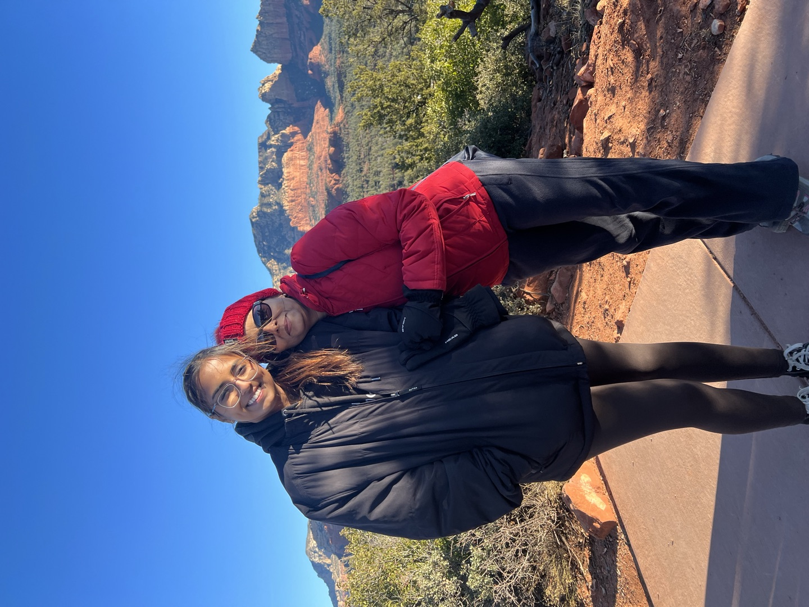

I’m interested in what happens between the neat boxes.
Between sensor and controller. Between a model and its evidence. Between a difficult experience and the words someone needs to describe it.

How I approach problems
Technical rigor and human context belong together.
Electrical and computer engineering taught me to trace a fault through signals, timing, interfaces, and physical behavior instead of guessing at the symptom. That habit carries across layers: a retrieval miss in a graph-backed system, a marginal timing edge in an FPGA design, and an unreliable sensor integration all reward the same patience with evidence.
Peer support and leadership added a second form of attention—understanding context and communicating clearly—which is what makes technical work usable by the people who depend on it.
Outside formal work
Perspective comes from staying connected.
Outside coursework and projects, I mentor young people in the Upper Valley and do peer-support and leadership work on campus. It keeps me grounded and connected beyond the lab.
Those experiences shape the engineer I am becoming: attentive to consequences, comfortable crossing boundaries between disciplines, and willing to take responsibility for the details.